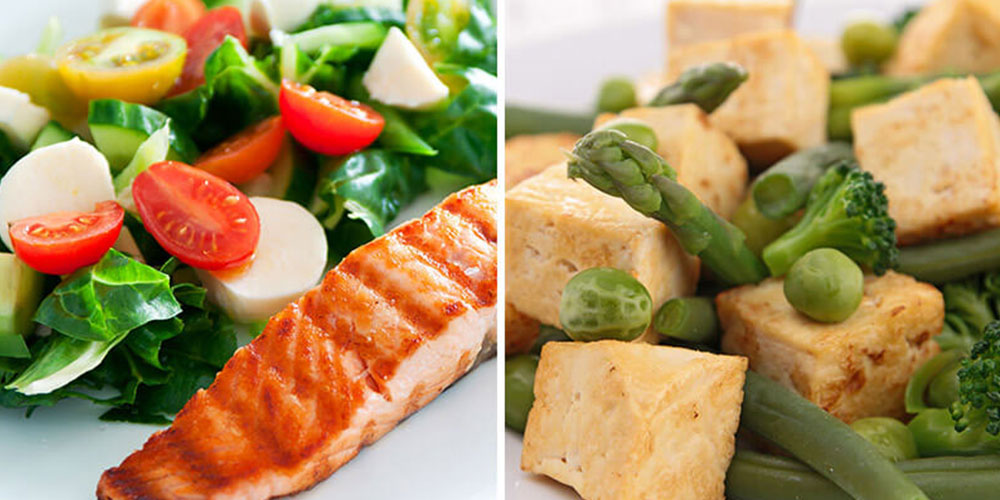

The Clean Eating Diet Plan Guide
When we discuss diet plans we can typically put them along a spectrum where food quantity is on one end and food quality is on the other.
Diets like If It Fits Your Macros (IIFYM) fall as far to the food quantity side as possible while clean eating falls as far to the food quality side as possibl
Additionally, in direct opposition to diets like IIFYM it imposes guidelines of what types of foods to eat and does not regulate calories of macros to any meaningful degree.
The main principles of clean eating are centered around focusing on the quality of the foods you consume and ensuring they are “clean”.
The principles can be summarized in one tenant: Choose whole, natural foods and seek to eliminate processed foods.
The core principles of the diet can be listed as follows:
- Avoid processed foods
- Avoid refined foods
- Avoid artificial ingredients
- Avoid alcohol
- Avoid soda and fruit juice
History of the Clean Eating Diet
As clean eating is not a well-defined dietary program it is difficult to trace the history of it as a dieting paradigm back to a singular beginning.
One could give credit to the ancient Greek physician Hippocrates who penned one of the first works on dietary principles and is responsible for the famous quote, “Let food by the medicine and medicine be thy food”.
General Overview of Components & Main Principles of The Clean Eating Diet
Clean eating is based on the principle of eating whole, natural unprocessed foods.
Most proponents of clean eating will suggest it is not truly a diet, but rather a view on what to eat and what not to eat.
It focuses on food quality and not quantity, so calorie counting is not utilized in this dietary framework.
Meal Timing/Frequency
On principle, clean eating does not have strict requirements for meal timing or meal frequency (read: how many times a day you eat).
However, in application most clean eating programs suggest people eat 5-6 smaller, clean food, meals and snacks throughout the day rather than 3 main meals.
Restrictions/Limitations
Clean eating places fairly substantial food restrictions on individuals. Clean eating diets require that people consume only whole, natural foods and eschew everything that is processed.
This excludes pastas, breads, crackers, chips, cereals, and anything else that has been processed. This approach also excludes things like condiments (e.g. mustards and spreads) as well as dressings.
Additionally most beverages are restricted; this includes alcohol, soda, and juice.
Does It Include Phases?
As traditionally thought of, the clean eating diet does not usually include phases.
Most prescriptions of the clean eating diet as instantiated in books, articles, and programs have people initiate the full spectrum of the diet at the outset. Some even include 30 day challenges in which whole, natural foods must be consumed for the entirety of the 30 days with no deviation from the protocol.
Who Is It Best Suited For?
Clean eating is best suited for people who are focused on the health properties of food, do not feel the desire to track the calories in their food, and who do not mind fairly restrictive approaches to nutrition.
Clean eating allows substantial flexibility in the amount of food one eats, the timing and frequency, and with some effort and diligence the diet can be used for a wide range of people with drastically different goals, muscle gain, or sport performance.
How Easy Is It to Follow?
How easy it is to follow the clean eating diet really depends on what type of person you are and your food preferences. For people who enjoy eating a wide variety of food, do not enjoy food restrictions, and would rather focus on the quantity of their food (i.e. the calories and macros) clean eating may be rather difficult to follow.
For people who are creatures of habit, do not mind eating within restricted dietary frameworks and do not enjoy counting their calories of macros clean eating can be an excellent dietary framework to follow.
Most people who practice clean eating long term usually build in small amounts of flexibility and follow either an 80/20 or 90/10 rule where they allow themselves to eat food on the restricted list 10-20% of the time.
Scientific Studies and Interpretation of Data
To date there are no published studies examining the effect of a clean eating diet which makes it difficult to draw hard conclusions on the scientific efficacy of this diet. However, there are a few things we can glean.
Most whole, natural foods are more satiating than their processed counter parts1. This makes controlling calorie intake much easier for a large majority of people.
Additionally, higher diet quality is associated with improved health markers and a lower risk of developing type 2 diabetes2,3.